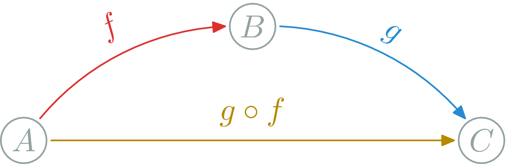
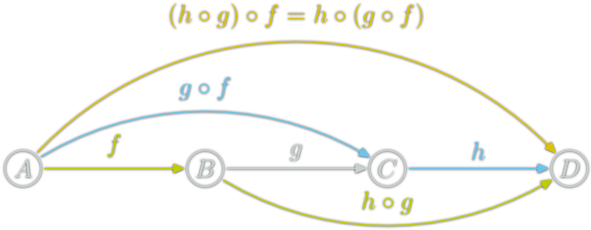
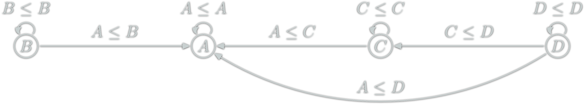
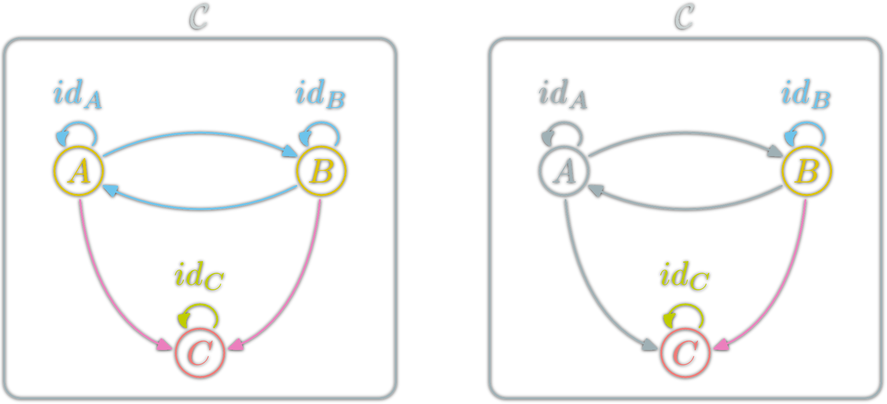
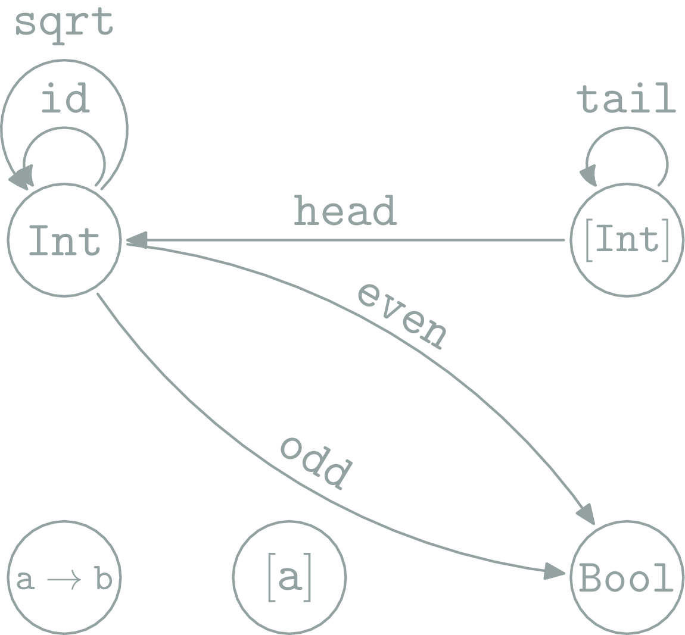
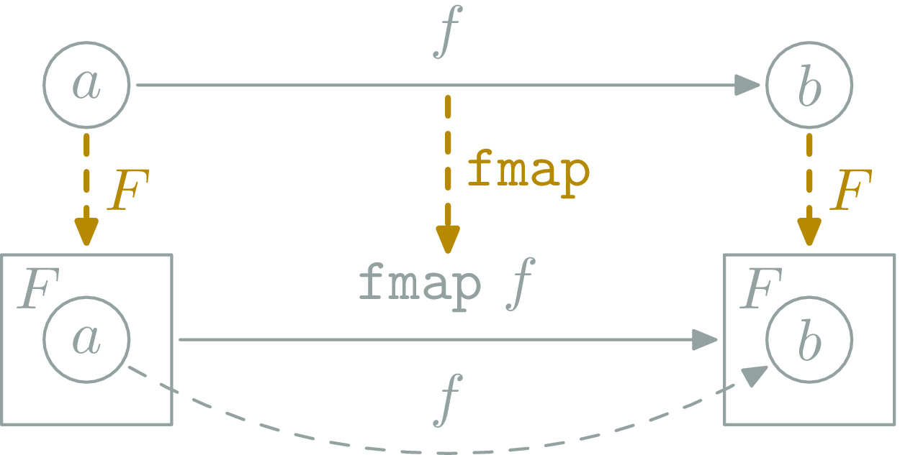
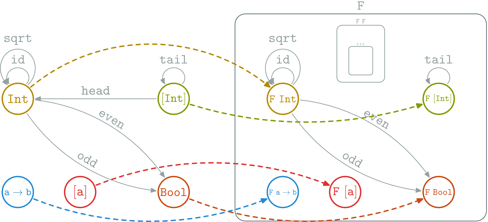
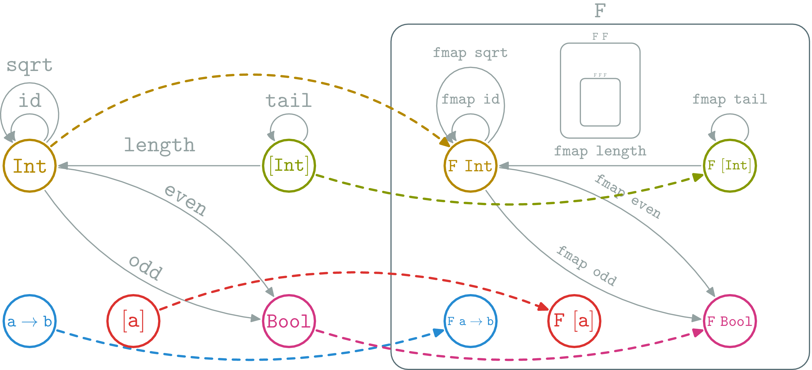
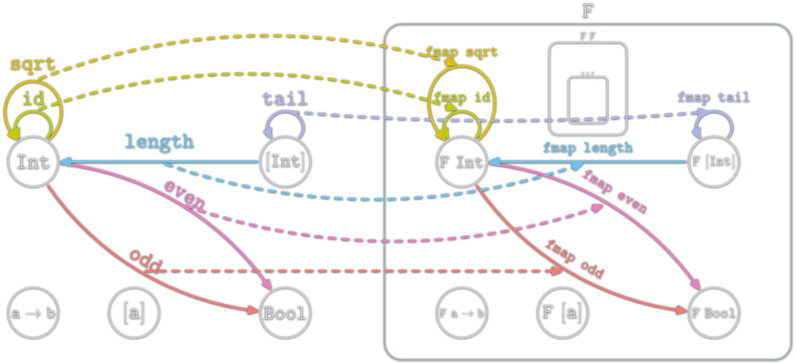

Commutative diagrams
Two path with the same source and destination are equal.

Recent Math Field ; 1942-45, Samuel Eilenberg & Saunders Mac Lane
Certainly one of the more abstract branches of math
From a Programmer perspective:
Category Theory is a new language/framework for Math
Programming is doing Math
Not convinced?
Certainly a vocabulary problem.
One of the goal of Category Theory is to create a homogeneous vocabulary between different disciplines.
Math vocabulary used in this presentation:
Category, Morphism, Associativity, Preorder, Functor, Endofunctor, Categorial property, Commutative diagram, Isomorph, Initial, Dual, Monoid Natural transformation, Monad, κατα-morphism,
Most will be translated for the programmer.
A way of representing things and ways to go between things.
A Category \(\mathcal{C}\) is defined by:
\(\ob{\mathcal{C}}\) is a collection
\(A\) and \(B\) objects of \(\C\)
\(\hom{A,B}\) is a collection of morphisms
\(f:A→B\) denote the fact \(f\) belongs to \(\hom{A,B}\)
\(\hom{\C}\) the collection of all morphisms of \(\C\)
Composition (∘): associate to each couple \(f:A→B, g:B→C\) $$g∘f:A\rightarrow C$$
for each object \(X\), there is an \(\id_X:X→X\),
such that for each \(f:A→B\):
Composition is associative:
Two path with the same source and destination are equal.
\(\ob{\C},\hom{\C}\) fixed, is there a valid ∘?


(.) )(++) "" ++ u = u = u ++ "" (u ++ v) ++ w = u ++ (v ++ w) each Monoid \((M,e,⊙): \ob{M}=\{∙\},\hom{M}=M,\circ = ⊙\)
one object
Examples: (Integer,0,+), (Integer,1,*), (Strings,"",++), (Lists,[],++), ...
each preorder \((P,≤): \ob{P}={P},\hom{x,y}=\{{x≤y}\} ⇔ x≤y,f_{y,z} \circ f_{x,y} = f_{x,z} \)
At most one morphism between two objects. Any set \(E: \ob{E}=E, \hom{x,y}=\{x\} ⇔ x=y \)
Only identities ; not so interesting
Any property which can be expressed in term of category, objects, morphism and composition
A functor is a mapping between two categories. Let \(\C\) and \(\D\) be two categories. A functor \(\F\) from \(\C\) to \(\D\):
An endofunctor for \(\C\) is a functor \(F:\C→\C\).
Categories and functors form a category: \(\Cat\)
Category \(\Hask\):
(.) Haskell function composition
Forget glitches because of undefined.
In Haskell some types can take type variable. Typically: [a].
data Tree a = Node a [Tree a]
data CTree a b = CNode a [b]Types have kind; The kind is to type what type is to function. Kind are the "type" for some types (so meta).
Int, Char :: *
[], Maybe, Tree :: * -> *
CTree :: * -> * -> *
[Int], Maybe Char, Tree [Int] :: *We can make function that can work for all type parameter. Such function can only work with the topology induced by the type. We know such function won't work on the elements.
Sometimes, the type determine a lot about the function:
fst :: (a,b) -> a -- Only one choice
snd :: (a,b) -> b -- Only one choice
f :: a -> [a] -- Many choices
-- Possibilities: f x=[], or [x], or [x,x] or [x,...,x]
? :: [a] -> [a] -- Many choices
-- can only duplicate/remove/reorder elements
-- for example: the type of addOne isn't [a] -> [a]
addOne l = map (+1) lFunctor for Haskell language is a type F :: * -> * which belong to the type class Functor.
It must implement fmap :: (a -> b) -> (F a -> F b).
& F: \(\ob{\Hask}→\ob{\Hask}\)
& fmap: \(\hom{\Hask}→\hom{\Hask}\)
The couple (F,fmap) is a functor in the categorical sense for \(\Hask\) if for any x :: F a:
fmap id x = x
fmap (f.g) x= (fmap f . fmap g) x
data Maybe a = Just a | Nothing
instance Functor Maybe where
fmap :: (a -> b) -> (Maybe a -> Maybe b)
fmap f (Just a) = f a
fmap f Nothing = Nothing
fmap (+1) (Just 1) == 2
fmap (+1) Nothing == Nothing
fmap head (Just [1,2,3]) == Just 1
instance Functor ([]) where
fmap :: (a -> b) -> [a] -> [b]
fmap = map
fmap (+1) [1,2,3] == [2,3,4]
fmap (+1) [] == []
fmap head [[1,2,3],[4,5,6]] == [1,4]
data F a = Cons Char a | Nil
-- examples :
-- Cons 'c' 32 :: F Int
-- Cons 'c' (\x -> x*x) :: F (Int -> Int)
-- Cons 'c' (Cons 'a' (\x -> x*x)) :: F (F (Int -> Int))
-- Cons 'c' (Cons 'c' Nil) :: F (F (F))
-- note String is the fixed point of F: F(F(F(...)))
instance Functor F where
fmap :: (a -> b) -> [a] -> [b]
fmap f (Cons c x) = Cons c (f x)
fmap f Nil = Nil
fmap (+1) (Cons 'c' 3) == Cons 'c' 4
fmap (+1) Nil == Nil
fmap head (Cons 'c' [1,2,3])== Cons 'c' 1
Put normal function inside a container. Ex: list, trees...

Haskell Functors are:
Haskell functor can be seen as boxes containing all Haskell types and functions. Haskell types is fractal:
Haskell functor can be seen as boxes containing all Haskell types and functions. Haskell types is fractal:
Haskell functor can be seen as boxes containing all Haskell types and functions. Haskell types is fractal:
A simple basic example is the \(id_\Hask\) functor. It simply cannot be expressed as a couple (F,fmap) where
F::* -> *fmap :: (a -> b) -> (F a) -> (F b)Another example:
T)=Intf)=\_->0length can be seen as a Functor from the category [a] to Int. More precisely:
⇒
length [] = 0
length (l ++ l') = (length l) + (length l')
All endofunctors of \(\C\) form the category \(\E_\C\) of endofunctors of \(\C\).
F a -> G a are the natural transformations.A Monad is just a monoid in the category of endofunctors, what's the problem?
All told, a monad in X is just a monoid in the category of endofunctors of X, with product × replaced by composition of endofunctors and unit set by the identity endofunctor.
A monoid is a triplet \((E,∙,e)\) s.t.
Satisfying
A Monad is a triplet \((M,⊙,η)\) s.t.
Satisfying
Example: Maybe is a functor
-- In Haskell ⊙ is "join" in "Control.Monad"
join :: Maybe (Maybe a) -> Maybe a
join (Just (Just x)) = Just x
join _ = Nothing
-- In Haskell the "return" function (unfortunate name)
η :: a -> Maybe a
η x = Just xExample: Maybe is a functor (join is ⊙)
join (Just (join (Just (Just x)))) = join (join (Just (Just (Just x))))
join (Just (join (Just Nothing))) = join (join (Just (Just Nothing)))
join (Just (join Nothing)) = join (join (Just Nothing))
join Nothing = join (join Nothing)
join (η (Just x)) = Just x = Just (η x)
join (η Nothing) = Nothing = NothingAnd (Maybe,join,η) is a monad.
Example with lists:
f=\x->[x] ⇒ f 1 = [1] ⇒ (f.f) 1 = [[1]]
g=\x->[x+1] ⇒ g 1 = [2] ⇒ (g.g) 1 = ERROR [2]+1
h=\x->[x+1,x*10] ⇒ h 1 = [2,10] ⇒ (h.h) 1 = ERROR [2,10]+1How to fix that? Kleisli composition
f <=< g = \x -> join ((fmap f) (g x))
f=\x->[x] ⇒ f 1 = [1] ⇒ (f <=< f) 1 = [1]
g=\x->[x+1] ⇒ g 1 = [2] ⇒ (g <=< g) 1 = [3]
h=\x->[x+1,x*10] ⇒ h 1 = [2,10] ⇒ (h <=< h) 1 = [3,20,11,100]A monad can also hide computation details (ex: a common parameter).
DrawScene to State Screen DrawScene ; still pure.
main = drawImage (width,height)
drawImage :: Screen -> DrawScene
drawImage screen =
drawPoint p screen
drawCircle c screen
drawRectangle r screen
drawPoint point screen = ...
drawCircle circle screen = ...
drawRectangle rectangle screen = ...main = do
put (Screen 1024 768)
drawImage
drawImage :: State Screen DrawScene
drawImage = do
drawPoint p
drawCircle c
drawRectangle r
drawPoint :: Point -> State Screen DrawScene
drawPoint p = do
Screensize width height <- get
.../
#